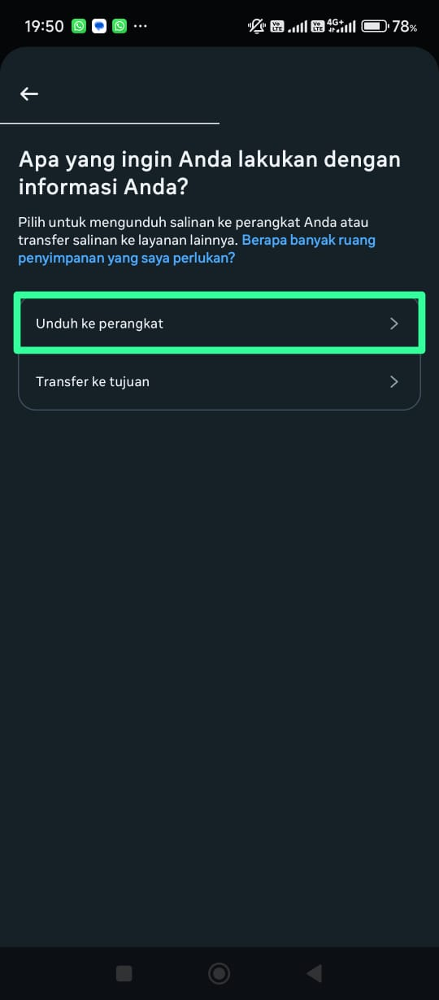
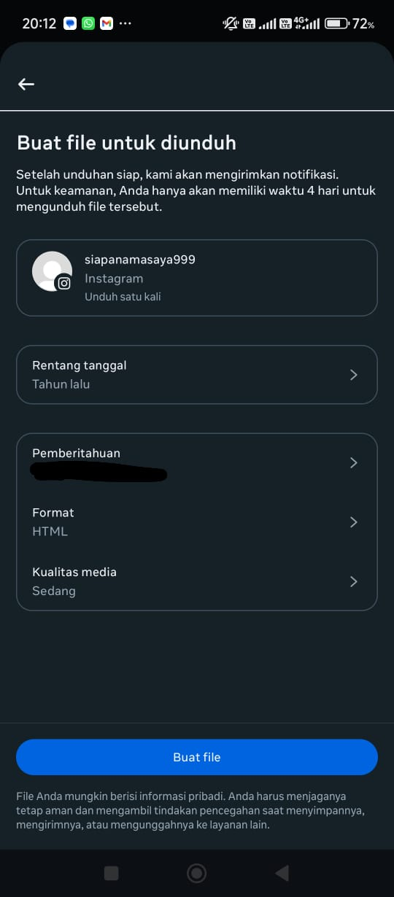

Website Usage Tutorial
Follow these steps to use the website correctly:
1. Open Instagram
2. Go to Settings

3. Select Account Center

4. Choose Your Information and Permissions

5. Select Download Your Information

6. Tap Download or Transfer Information
7. Choose Some of Your Information
8. Select Followers and Following

9. Select Download to Device

10. Select Date Range
11. Select All Time

12. Wait
13. Click Download
14. Enter Your Password

15. Find the File in "File Manager"
16. Extract the File
17. After Extraction, Open the Folder
18. Select the "Connections" Folder

19. Upload the "follower_1.html" and "following.html" Files to the Website

20. Click Choose File
21. Click Media Selection
22. Select the "following.html" File
23. Click Choose File

24. Click Media Selection
25. Select the "followers_1.html" File
26. Click Check Unfollow